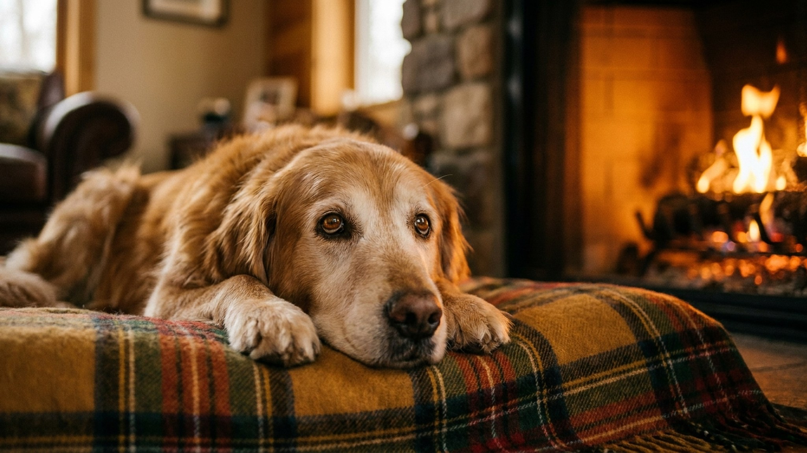

Стареющий пёс: 7 признаков, что собаке нужен другой уход — и что менять

1 июня 2026 · 9 минут чтения · Здоровье · Гериатрия · Собаки
Собаки стареют по-разному в зависимости от размера. Чихуахуа в 10 лет ещё в расцвете сил, немецкий дог в 7 уже сеньор. Именно из-за этого разброса хозяева часто упускают начало возрастного периода: ориентируются на «старость в человеческом смысле» и начинают менять уход слишком поздно. Семь признаков, которые чаще всего пропускают, и конкретика по каждому.
🐾 Первая помощь — всегда под рукой
AnimaLife подскажет, что делать в тревожной ситуации с питомцем ещё до визита к врачу. Откройте в один тап.
Открыть AnimaLife → Открыть в MAX →
С какого возраста собака — сеньор
В ветеринарной гериатрии нет единой возрастной отметки. Ключевой фактор — размер (вес) собаки:
- Мелкие породы до 10 кг (той-терьер, чихуахуа, шпиц, йоркширский терьер): сеньор с 10-11 лет, гериатрический возраст с 13-14.
- Средние породы 10-25 кг (бигль, кокер-спаниель, бордер-колли): сеньор с 8-9 лет.
- Крупные породы 25-45 кг (лабрадор, хаски, немецкая овчарка): сеньор с 7-8 лет.
- Гигантские породы 45+ кг (сенбернар, немецкий дог, кане-корсо): сеньор с 5-6 лет. Средняя продолжительность жизни — 8-10 лет.
Общая закономерность: крупные собаки стареют быстрее из-за более высокой скорости обменных процессов и большей нагрузки на опорно-двигательный аппарат. Именно с этого возрастного порога меняется стратегия ухода.
Признак 1: снижение активности и нежелание двигаться
Хозяева часто объясняют сниженную активность «ленью» или «характером». Но у пожилой собаки снижение активности — первый сигнал боли или усталости, а не характера.
Что замечать:
- Собака укорачивает прогулку сама — поворачивает домой раньше обычного.
- Не хочет играть, хотя раньше откликалась на мяч или апорт.
- Медленно встаёт после сна, особенно по утрам — «расхаживается» несколько минут.
- Отказывается подниматься на диван/в машину, хотя раньше делала это легко.
Это могут быть ранние признаки артрита, мышечной атрофии или нарушений в работе сердца. Все три требуют диагностики, но хорошо поддаются лечению на ранней стадии.
Признак 2: ранние признаки артрита — и почему их пропускают
Остеоартрит у собак встречается примерно у 20% собак старше 1 года и у 80% собак старше 8 лет. При этом диагностируется лишь у части из них — потому что собаки, в отличие от кошек, часто компенсируют боль без явного хромания.
Ранние признаки, которые пропускают:
- Собака слизывает или покусывает лапы/суставы в покое — болезненный зуд в суставе.
- Меняет позу при лёжке чаще, чем раньше.
- Реагирует болью (скулит, отдёргивает лапу) при прикосновении к бедру или плечу.
- Начала «прихрамывать» только после долгого сна, но «разгуливается».
Актуальное лечение в РФ: в 2024 году в России был зарегистрирован бединветмаб (Librela, Zoetis) — моноклональное антитело против фактора роста нервов (NGF), ключевого медиатора боли при артрите. Ежемесячная подкожная инъекция. Принципиально отличается от НПВС (нестероидных противовоспалительных): не нагружает почки и ЖКТ, действует на механизм боли, а не маскирует симптом. По данным клинических исследований, у 68% собак значительно улучшается подвижность уже к 4-й неделе. Доступен в российских ветклиниках с конца 2024 года.
Признак 3: когнитивная дисфункция — шкала DISHAA
Когнитивная дисфункция собак (CDS, аналог болезни Альцгеймера) встречается у 22-28% собак старше 11 лет и у 68% собак старше 15. Часто не диагностируется — хозяева принимают симптомы за «старость» и не обращаются к врачу.
Для первичной оценки используется шкала DISHAA (каждая буква — симптомокомплекс):
- D — Disorientation (дезориентация): застывает посреди комнаты, ходит по кругу, застревает в углах, не находит выход из знакомого помещения.
- I — Interactions (нарушение социального взаимодействия): стала меньше реагировать на хозяина, не узнаёт членов семьи, агрессия без провокации.
- S — Sleep-Wake cycles (нарушение сна): ночное беспокойство, вой и хождение ночью, сонливость днём.
- H — House soiling (нарушение туалетных навыков): ходит дома «мимо», хотя раньше просилась гулять.
- A — Activity (изменение активности): апатия или, наоборот, навязчивое повторяющееся поведение.
- A — Anxiety (тревожность): сепарационная тревога, страхи, вокализация без повода.
Если замечаете 2+ пункта — к неврологу или терапевту. CDS не лечится, но прогрессирование замедляется: пропентофиллин, диеты с антиоксидантами (Hill's Prescription Diet b/d), среда с предсказуемым режимом, регулярные прогулки.
Признак 4: изменение аппетита и веса
У пожилых собак два противоположных сценария — и оба требуют внимания:
Потеря веса при сохранении аппетита — первый признак ряда заболеваний: гипертиреоз (редко у собак, но встречается), сахарный диабет, хроническая болезнь почек, онкология, мальабсорбция. Потеря более 10% веса за 3 месяца — к врачу с анализами.
Набор веса при снижении активности — гипотиреоз (у собак среднего и крупного размера встречается в 15-20% случаев после 7 лет), снижение метаболизма. Ожирение при артрите — замкнутый круг: боль ограничивает движение, движение ограничено — набирается вес, вес давит на суставы.
Что делать: взвешивать собаку раз в месяц. Для домашнего взвешивания: встать на весы с собакой, запомнить число, встать без собаки. Любое изменение более 5% от нормы — зафиксировать и сообщить врачу.
Признак 5: появление симптомов со стороны органов чувств
Ухудшение слуха и зрения — нормальная часть старения, но их важно отделять от патологических изменений.
- Снижение слуха: собака перестала реагировать на кличку — особенно без зрительного контакта. Проверка: позовите собаку, когда она смотрит в другую сторону. Глухота у пожилых собак необратима, но адаптируется: учите жестовые команды.
- Ядерный склероз хрусталика: голубоватое помутнение в центре зрачка — нормальное возрастное явление. Не глаукома и не катаракта. Зрение снижается умеренно.
- Катаракта — белое непрозрачное помутнение. Прогрессирует. При сильном снижении зрения — показание к операции, в том числе у пожилых собак (анестезиологический риск оценивается индивидуально).
- Глаукома — боль, увеличенный глаз, покраснение. Это острая ситуация, в отличие от катаракты.
Признак 6: изменения в мочеиспускании
Полидипсия (много пьёт) + полиурия (часто и много мочится) у пожилой собаки — маркер нескольких значимых заболеваний:
- Хроническая болезнь почек (ХБП): у собак встречается реже, чем у кошек, но после 8 лет — значимый риск. Диагностируется по анализу мочи (снижение удельного веса) и крови (рост мочевины, креатинина).
- Сахарный диабет: чаще у необеспложенных сук среднего и старшего возраста. Симптомы: пьёт и мочится много, ест хорошо, но худеет, запах ацетона от дыхания.
- Гиперадренокортицизм (синдром Кушинга): избыток кортизола. Типичная картина: пьёт много, живот «бочкой», симметричная потеря шерсти, кожные изменения. Чаще у такс, пуделей, боксёров.
Все три — хронические, контролируемые заболевания. Качество и продолжительность жизни при ранней диагностике значительно выше.
Признак 7: изменение поведения и настроения
Пожилая собака, которая стала агрессивнее, тревожнее, менее терпимой к детям или другим животным — не «разбаловалась». Это может быть:
- Боль (артрит, зубная боль — у 80% собак старше 3 лет есть та или иная степень заболевания пародонта, у пожилых — почти всегда).
- Когнитивная дисфункция (страх и дезориентация дают агрессию).
- Нарушение слуха или зрения (пугается, не слышит приближения).
- Гормональные изменения.
Любое новое поведение у собаки старше 7-10 лет (в зависимости от размера) — сигнал для врача в течение 1-2 недель.
🐾 Экономьте на лишних визитах к врачу
Сначала спросите AI-ветеринара в AnimaLife — часто этого достаточно, чтобы понять, нужен ли визит к врачу.
Спросить бесплатно → Спросить в MAX →
Что критически важно менять в уходе
- Корм: переход на линейку Senior. Royal Canin Size Health Nutrition Maxi Ageing 8+, Hill's Science Plan Adult 7+ Large Breed, Brit Care Dog Adult Performance. Ключевые параметры: умеренный белок высокого качества, контролируемый фосфор, L-карнитин для поддержания мышечной массы, омега-3 для суставов и когниций.
- Частота чек-апов: 1 раз в 6 месяцев вместо 1 раза в год. Базовый набор: ОАК, биохимия, ОАМ, давление, ЭКГ (для крупных пород). После 10 лет — добавить УЗИ брюшной полости раз в год.
- Среда дома: нескользкое покрытие на полу (ковры, противоскользящие дорожки), пандусы вместо ступеней к любимым местам, поднятые миски (снижают нагрузку на шею при артрите шейного отдела), ортопедическая лежанка.
- Зубы: чистить регулярно, при сильном зубном камне — профессиональная ультразвуковая чистка под наркозом. Зубная боль снижает качество жизни и ухудшает когниции.
- Прогулки: не сокращать длину прогулок резко. Лучше чаще, но короче и медленнее. Стабильная умеренная нагрузка замедляет мышечную атрофию и полезна для когнитивного здоровья.
Пожилая собака требует большего внимания, а не меньшего. Возраст — не диагноз и не приговор. При грамотной гериатрической поддержке большинство собак проживают последние годы качественно и активно.
← Все статьи · Открыть AnimaLife в Telegram · RSS